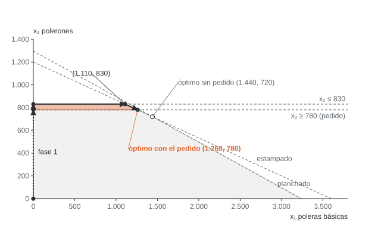

![Camilo Merino]()
Unidad 9 · Simplex: dos fases, gran M y casos especiales
Qué vas a poder hacer. Arrancar el simplex cuando el origen no es factible, agregando variables artificiales a las restricciones \(\ge\) e \(=\); sacarlas de la base con el método de la gran M o con el de dos fases; y reconocer en la tabla, sin dibujar nada, cuándo un problema es degenerado, tiene óptimos múltiples, es no acotado o no tiene solución.
Lo que necesitas antes. La unidad 8: forma estándar, base y solución básica factible, costo reducido, prueba de la razón mínima y pivoteo en la tabla. De la unidad 2 basta con saber que el simplex camina de vértice en vértice.
Tiempo. Unas 5 horas: 2 de lectura con el ejemplo y 3 de práctica.
1. El problema: no hay base para partir
El simplex de la unidad 8 parte del origen. Con restricciones \(\le\) y lados derechos no negativos, las holguras forman una matriz identidad y la primera base sale gratis: \(s_i = b_i\). Con una restricción \(\ge\) o una \(=\) eso deja de funcionar.
- En una \(\ge\), la variable de exceso entra con coeficiente \(-1\): \(a_i^\top x - e_i = b_i\). En el origen quedaría \(e_i = -b_i < 0\), que no es factible.
- En una \(=\) no hay holgura ni exceso: no hay ninguna variable que pueda ser básica de partida.
El arreglo es agregar, en cada una de esas filas, una variable artificial \(a_i \ge 0\) con coeficiente \(+1\). Las artificiales completan la identidad y la base inicial vuelve a ser obvia: \(a_i = b_i\). El precio es que una artificial no significa nada: si queda positiva, la restricción original no se cumple. Todo el trabajo de esta unidad es sacarlas de la base (dejarlas en cero) antes de buscar el óptimo.
| Restricción | Se agrega | Coeficiente | Básica al partir |
|---|---|---|---|
| \(\le\) | holgura \(s_i\) | \(+1\) | \(s_i = b_i\) |
| \(\ge\) | exceso \(e_i\) y artificial \(a_i\) | \(-1\) y \(+1\) | \(a_i = b_i\) |
| \(=\) | artificial \(a_i\) | \(+1\) | \(a_i = b_i\) |
Antes de todo, cada lado derecho tiene que ser \(b_i \ge 0\). Si una fila trae \(b_i < 0\), se multiplica por \(-1\) y la desigualdad se da vuelta (\(\le\) pasa a \(\ge\)).
La tabla de esta unidad
Es la misma del curso. La fila 0 lleva los costos reducidos y, en el lado derecho (LD), \(-z\):
\[\bar c_j = c_j - c_B^\top B^{-1} A_j \qquad\qquad \text{LD de la fila 0} = -c_B^\top B^{-1} b = -z\]
- Máximo: entra el \(\bar c_j\) más positivo; la tabla es óptima cuando todos los \(\bar c_j \le 0\).
- Mínimo: entra el \(\bar c_j\) más negativo; la tabla es óptima cuando todos los \(\bar c_j \ge 0\).
- Sale la básica con la menor razón \(\text{LD}_i / \alpha_{ie}\) entre las filas con \(\alpha_{ie} > 0\).
- Empates: entra la columna de más a la izquierda y sale la fila de más arriba.
Las variables básicas siempre tienen \(\bar c_j = 0\). Esa es la prueba más rápida de que la fila 0 está bien calculada.
2. Método de la gran M
La idea es cobrarle a cada artificial un costo tan alto que el simplex prefiera cualquier otra cosa antes que dejarla positiva. Con un número \(M\) «más grande que cualquier dato del problema»:
\[\max\; z = c^\top x - M \sum_i a_i \qquad\qquad \min\; z = c^\top x + M \sum_i a_i\]
En un máximo la artificial resta; en un mínimo suma. En los dos casos empeora el objetivo.
Los costos reducidos quedan de la forma \(p + qM\). Se comparan primero por el coeficiente de \(M\) y solo si empatan por el número suelto: \(4 - 3M\) es más negativo que \(7 - 2M\), aunque \(4 < 7\) no tenga nada que ver. En la tabla inicial de un mínimo, la columna \(j\) queda con
\[\bar c_j = c_j - M \sum_{i \,\in\, \text{filas con artificial}} a_{ij}\]
porque las artificiales son básicas con costo \(M\). Ese es el paso que más se olvida: si en la fila 0 se copia el \(M\) del objetivo bajo cada artificial, las básicas quedan con \(\bar c \neq 0\) y todo lo que sigue sale mal.
Cómo termina.
- Si la tabla óptima tiene todas las artificiales en cero, esa es la solución del problema original.
- Si en la tabla óptima queda una artificial positiva, el problema original es infactible: ni pagando el castigo infinito se pudo cumplir esa restricción.
Cuándo no conviene. En un computador \(M\) tiene que ser un número concreto. Si es demasiado chico, el simplex prefiere pagar la multa y entrega una «solución» con artificiales positivas (ejercicio 9.9); si es demasiado grande, mezcla cifras de tamaños muy distintos y los redondeos se comen los datos reales. Por eso los programas usan dos fases.
3. Método de las dos fases
Separa las dos preguntas: primero ¿hay algún vértice factible? y después ¿cuál es el mejor?
Fase 1. Con las mismas restricciones (artificiales incluidas) se resuelve
\[\min\; w = \sum_i a_i\]
Como todas las artificiales son no negativas, \(w \ge 0\) siempre. Hay dos salidas:
- \(w^* > 0\): no existe ningún punto con todas las artificiales en cero. El problema es infactible y se detiene ahí.
- \(w^* = 0\): la base final es un vértice factible del problema original. Si quedó alguna artificial básica con valor 0, se saca pivoteando en cualquier columna no artificial de su fila (si la fila entera es cero fuera de las artificiales, era una restricción redundante y se borra).
La fila 0 de la fase 1 parte, en las columnas no artificiales, con
\[\bar c_j = -\sum_{i \,\in\, \text{filas con artificial}} a_{ij} \qquad\qquad \text{LD} = -\sum_{i \,\in\, \text{filas con artificial}} b_i = -w\]
Fase 2. Se borran las columnas artificiales, se vuelve al objetivo original y se recalcula la fila 0 con \(\bar c_j = c_j - c_B^\top B^{-1}A_j\) usando las básicas que dejó la fase 1. Desde ahí, el simplex de siempre.
Por qué las dos fases y la gran M pasan por las mismas bases. Mientras quede una artificial positiva, el término en \(M\) manda en la gran M y la elección es la misma que en la fase 1 (que solo mira las artificiales). Cuando las artificiales salen, el término en \(M\) desaparece de las columnas que importan y queda el objetivo original, igual que en la fase 2. Con las mismas reglas de empate, el camino coincide. El ejemplo lo muestra.
4. Ejemplo resuelto · el sustrato de una tienda de jardinería
Una tienda de jardinería de Los Ángeles vende sacos de sustrato de 60 litros. Los arma mezclando tierra de hoja ($180 el litro) y compost ($310 el litro). Cada litro de tierra aporta 1 g de nitrógeno y cada litro de compost, 4 g; un saco necesita al menos 150 g. Más de 40 litros de compost por saco quema las raíces. ¿Qué mezcla cuesta menos?
En palabras. Se decide cuántos litros de cada insumo lleva un saco. Se busca el menor costo. Lo limitan el volumen del saco (exacto), el nitrógeno mínimo y el tope de compost.
Algebraico. \(x_1\) litros de tierra, \(x_2\) litros de compost.
\[\min\; z = 180x_1 + 310x_2\] \[\text{s.a.}\quad x_1 + x_2 = 60 \qquad x_1 + 4x_2 \ge 150 \qquad x_2 \le 40 \qquad x_1, x_2 \ge 0\]
En OPL (modelos/u09_sustrato.mod):
/*********************************************
* Unidad 9 · Ejemplo · sustrato de un vivero
* Mezcla de tierra de hoja y compost al menor costo, por saco de 60 litros.
* Tiene una restricción =, una >= y una <=: a mano necesita dos artificiales.
*********************************************/
{string} Insumos = {"tierra", "compost"};
float costo[Insumos] = [180, 310]; // CLP por litro
float nitrogeno[Insumos] = [1, 4]; // gramos de nitrógeno por litro
float volumen = 60; // litros por saco
float nitrogenoMin = 150; // gramos de nitrógeno por saco
float compostMax = 40; // litros de compost como máximo
dvar float+ x[Insumos]; // litros de cada insumo en el saco
minimize sum(i in Insumos) costo[i] * x[i];
subject to {
ctVolumen: sum(i in Insumos) x[i] == volumen;
ctNitrogeno: sum(i in Insumos) nitrogeno[i] * x[i] >= nitrogenoMin;
ctCompost: x["compost"] <= compostMax;
}
execute {
writeln("x_tierra = ", x["tierra"]);
writeln("x_compost = ", x["compost"]);
writeln("dual_volumen = ", ctVolumen.dual);
writeln("dual_nitrogeno = ", ctNitrogeno.dual);
writeln("dual_compost = ", ctCompost.dual);
}
Paso 1 · Forma estándar. La \(=\) recibe una artificial; la \(\ge\), un exceso y una artificial; la \(\le\), una holgura:
\[x_1 + x_2 + a_1 = 60 \qquad x_1 + 4x_2 - e_2 + a_2 = 150 \qquad x_2 + s_3 = 40\]
La base inicial es \(\{a_1, a_2, s_3\}\) con valores 60, 150 y 40.
Paso 2 · Gran M. El objetivo es \(\min\; 180x_1 + 310x_2 + Ma_1 + Ma_2\). Las dos artificiales son básicas con costo \(M\), así que \(\bar c_{x_1} = 180 - M(1+1) = 180 - 2M\) y \(\bar c_{x_2} = 310 - M(1+4) = 310 - 5M\). Es un mínimo: entra el más negativo, que es el de mayor coeficiente negativo en \(M\).
Tabla 0.
| Base | \(x_{1}\) | \(x_{2}\) | \(e_{2}\) | \(s_{3}\) | \(a_{1}\) | \(a_{2}\) | LD |
|---|---|---|---|---|---|---|---|
| \(\bar c\) | 180 − 2M | 310 − 5M | M | 0 | 0 | 0 | −210M |
| \(a_{1}\) | 1 | 1 | 0 | 0 | 1 | 0 | 60 |
| \(a_{2}\) | 1 | 4 | −1 | 0 | 0 | 1 | 150 |
| \(s_{3}\) | 0 | 1 | 0 | 1 | 0 | 0 | 40 |
Entra \(x_{2}\). Razones: \(a_{1}\) 60 · \(a_{2}\) 37,5 · \(s_{3}\) 40. Sale \(a_{2}\).
Tabla 1.
| Base | \(x_{1}\) | \(x_{2}\) | \(e_{2}\) | \(s_{3}\) | \(a_{1}\) | \(a_{2}\) | LD |
|---|---|---|---|---|---|---|---|
| \(\bar c\) | 102,5 − 0,75M | 0 | 77,5 − 0,25M | 0 | 0 | −77,5 + 1,25M | −11.625 − 22,5M |
| \(a_{1}\) | 0,75 | 0 | 0,25 | 0 | 1 | −0,25 | 22,5 |
| \(x_{2}\) | 0,25 | 1 | −0,25 | 0 | 0 | 0,25 | 37,5 |
| \(s_{3}\) | −0,25 | 0 | 0,25 | 1 | 0 | −0,25 | 2,5 |
Entra \(x_{1}\). Razones: \(a_{1}\) 30 · \(x_{2}\) 150 · \(s_{3}\) —. Sale \(a_{1}\).
Tabla 2.
| Base | \(x_{1}\) | \(x_{2}\) | \(e_{2}\) | \(s_{3}\) | \(a_{1}\) | \(a_{2}\) | LD |
|---|---|---|---|---|---|---|---|
| \(\bar c\) | 0 | 0 | 130/3 | 0 | −410/3 + M | −130/3 + M | −14.700 |
| \(x_{1}\) | 1 | 0 | 1/3 | 0 | 4/3 | −1/3 | 30 |
| \(x_{2}\) | 0 | 1 | −1/3 | 0 | −1/3 | 1/3 | 30 |
| \(s_{3}\) | 0 | 0 | 1/3 | 1 | 1/3 | −1/3 | 10 |
Óptima: ningún costo reducido mejora.
Paso 3 · Dos fases. La fase 1 minimiza \(w = a_1 + a_2\). Su fila 0 parte con \(-(1+1) = -2\) para \(x_1\), \(-(1+4) = -5\) para \(x_2\), \(+1\) para \(e_2\) y \(-w = -210\).
Tabla 0 · fase 1.
| Base | \(x_{1}\) | \(x_{2}\) | \(e_{2}\) | \(s_{3}\) | \(a_{1}\) | \(a_{2}\) | LD |
|---|---|---|---|---|---|---|---|
| \(\bar c\) | −2 | −5 | 1 | 0 | 0 | 0 | −210 |
| \(a_{1}\) | 1 | 1 | 0 | 0 | 1 | 0 | 60 |
| \(a_{2}\) | 1 | 4 | −1 | 0 | 0 | 1 | 150 |
| \(s_{3}\) | 0 | 1 | 0 | 1 | 0 | 0 | 40 |
Entra \(x_{2}\). Razones: \(a_{1}\) 60 · \(a_{2}\) 37,5 · \(s_{3}\) 40. Sale \(a_{2}\).
Tabla 1 · fase 1.
| Base | \(x_{1}\) | \(x_{2}\) | \(e_{2}\) | \(s_{3}\) | \(a_{1}\) | \(a_{2}\) | LD |
|---|---|---|---|---|---|---|---|
| \(\bar c\) | −0,75 | 0 | −0,25 | 0 | 0 | 1,25 | −22,5 |
| \(a_{1}\) | 0,75 | 0 | 0,25 | 0 | 1 | −0,25 | 22,5 |
| \(x_{2}\) | 0,25 | 1 | −0,25 | 0 | 0 | 0,25 | 37,5 |
| \(s_{3}\) | −0,25 | 0 | 0,25 | 1 | 0 | −0,25 | 2,5 |
Entra \(x_{1}\). Razones: \(a_{1}\) 30 · \(x_{2}\) 150 · \(s_{3}\) —. Sale \(a_{1}\).
Tabla 2 · fase 1.
| Base | \(x_{1}\) | \(x_{2}\) | \(e_{2}\) | \(s_{3}\) | \(a_{1}\) | \(a_{2}\) | LD |
|---|---|---|---|---|---|---|---|
| \(\bar c\) | 0 | 0 | 0 | 0 | 1 | 1 | 0 |
| \(x_{1}\) | 1 | 0 | 1/3 | 0 | 4/3 | −1/3 | 30 |
| \(x_{2}\) | 0 | 1 | −1/3 | 0 | −1/3 | 1/3 | 30 |
| \(s_{3}\) | 0 | 0 | 1/3 | 1 | 1/3 | −1/3 | 10 |
Óptima: ningún costo reducido mejora.
Tabla 3 · fase 2.
| Base | \(x_{1}\) | \(x_{2}\) | \(e_{2}\) | \(s_{3}\) | LD |
|---|---|---|---|---|---|
| \(\bar c\) | 0 | 0 | 130/3 | 0 | −14.700 |
| \(x_{1}\) | 1 | 0 | 1/3 | 0 | 30 |
| \(x_{2}\) | 0 | 1 | −1/3 | 0 | 30 |
| \(s_{3}\) | 0 | 0 | 1/3 | 1 | 10 |
Óptima: ningún costo reducido mejora.
La fase 1 termina con \(w^* = 0\) y ninguna artificial en la base. Al recalcular la fila 0 con los costos 180 y 310, la tabla ya cumple \(\bar c_j \ge 0\): la fase 2 no necesita iterar.
Paso 4 · Comparar. La gran M pasó por las bases \(\{a_1, a_2, s_3\}\), \(\{a_1, x_2, s_3\}\) y \(\{x_1, x_2, s_3\}\); las dos fases, por las mismas. Mira la segunda tabla de cada método: en la gran M, el coeficiente de \(M\) de cada columna es la fila 0 de la fase 1 (\(-0{,}75\) y \(-0{,}25\)) y el número suelto es el costo reducido del objetivo original. La gran M hace las dos fases al mismo tiempo.
Cómo se lee.
- El saco lleva 30 litros de tierra y 30 de compost y cuesta $14.700. OPL da lo mismo.
- El nitrógeno queda justo en 150 g (\(e_2 = 0\)): es la restricción que manda. El compost queda 10 litros bajo su tope (\(s_3 = 10\)): ese tope no influye en esta mezcla.
- \(\bar c_{e_2} = 130/3\): si el saco tuviera que llevar un gramo más de nitrógeno, el costo subiría unos $43, mientras la base no cambie. Ese número es un precio dual (unidad 10).
- La decisión: la tienda arma el saco mitad y mitad. Si un proveedor ofrece compost más barato, la pregunta no es «cuánto más compost», sino si el nitrógeno sigue siendo lo único que aprieta.
5. Casos especiales: cómo se ven en la tabla
| Caso | Cómo se ve en la tabla | Qué significa | Qué se hace |
|---|---|---|---|
| Degeneración | una básica vale 0, o hubo empate en la razón mínima | el vértice tiene más restricciones activas de las necesarias | se sigue; el pivote puede no mejorar \(z\) |
| Óptimos múltiples | tabla óptima con una no básica de \(\bar c_j = 0\) | el objetivo es paralelo a una cara de la región | se pivotea esa columna para obtener otro vértice óptimo |
| No acotado | la columna que entra no tiene ningún \(\alpha_{ie} > 0\) | se puede mejorar \(z\) sin límite | se detiene; falta una restricción en el modelo |
| Infactible | fase 1 con \(w^* > 0\), o gran M con una artificial positiva al final | no existe ningún punto que cumpla todo | se detiene; hay que revisar qué restricciones chocan |
Por qué cada lectura funciona.
- No acotado. La razón mínima existe para que ninguna básica se vuelva negativa. Si en la columna que entra todos los \(\alpha_{ie}\) son \(\le 0\), aumentar la variable que entra no baja a ninguna básica: se puede aumentar para siempre y \(z\) mejora a ritmo \(\bar c_e\) por unidad.
- Óptimos múltiples. \(\bar c_j\) dice cuánto cambia \(z\) por unidad de \(x_j\). Si una no básica tiene \(\bar c_j = 0\), meterla a la base cambia el punto pero no \(z\): hay otro vértice igual de bueno, y todo el segmento entre los dos también lo es.
- Degeneración. Si una básica vale 0, la razón mínima de su fila puede ser 0: el pivote cambia de base sin moverse del punto y \(z\) no cambia. En casos raros el simplex puede volver a una base ya visitada y ciclar para siempre. La regla de Bland lo impide: entre las columnas que mejoran entra la de menor índice y, ante empate en la razón, sale la básica de menor índice. Los programas traen protecciones equivalentes; a mano casi nunca pasa.
- Infactible. \(w\) es la suma de lo que «falta» para cumplir cada restricción \(\ge\) o \(=\). Si su mínimo es positivo, no hay manera de que falte cero.
Cuándo no aplica. Un \(\bar c_j = 0\) en una no básica de una tabla degenerada puede no llevar a un punto distinto: si la razón mínima de esa columna es 0, el pivote cambia la base pero no el punto. Antes de afirmar «hay infinitas soluciones» hay que hacer el pivote y mirar si el punto cambió.
6. Errores típicos
| Error | Cómo evitarlo |
|---|---|
| Olvidar la artificial en una restricción \(=\) | Toda \(=\) y toda \(\ge\) llevan una artificial; las \(\le\) no |
| Usar el exceso como básica de partida | Su coeficiente es \(-1\): partiría con valor \(-b_i\) |
| Copiar \(M\) en la fila 0 bajo las artificiales sin «limpiar» | Calcula \(\bar c_j = c_j - c_B^\top B^{-1}A_j\); las básicas tienen que quedar en 0 |
| Poner \(+M\) en un máximo o \(-M\) en un mínimo | La artificial siempre empeora el objetivo: resta en un máximo, suma en un mínimo |
| Comparar \(p + qM\) por el número suelto | Manda el coeficiente de \(M\); el número solo desempata |
| Empezar la fase 2 con la fila 0 de la fase 1 | Se recalcula con el objetivo original y las básicas que dejó la fase 1 |
| Declarar infactible porque quedó una artificial básica | Solo es infactible si \(w^* > 0\); una artificial básica en 0 se saca pivoteando |
| Ver óptimos múltiples en el \(\bar c = 0\) de una básica | Las básicas siempre tienen \(\bar c = 0\); la señal es una no básica con \(\bar c = 0\) |
| Buscar el no acotado en la columna del LD | Se mira la columna de la variable que entra: ningún coeficiente positivo |
7. Práctica
Diez ejercicios: 9.1 a 9.4 básicos, 9.5 a 9.8 intermedios, 9.9 y 9.10 de desafío. Usa la convención de tabla de la sección 1 (empates: columna de más a la izquierda, fila de más arriba) para que tus tablas coincidan con las pautas.
9.1 · Preparar la partida (básico). Para \(\min\; z = 4x_1 + 7x_2 + 3x_3\) s.a. \(2x_1 + x_2 + x_3 \ge 12\), \(x_1 + 3x_2 = 15\), \(x_1 + x_2 + 2x_3 \le 20\), \(x \ge 0\): (a) escribe la forma estándar con holguras, excesos y artificiales; (b) di cuál es la base inicial; (c) escribe la fila 0 inicial de la fase 1 y la de la gran M; (d) resuelve con un programa y di el óptimo.
9.2 · Óptimos múltiples (básico). Resuelve con simplex \(\max\; z = 5x_1 + 10x_2\) s.a. \(x_1 + 2x_2 \le 16\), \(3x_1 + 2x_2 \le 24\), \(x \ge 0\). ¿Cómo sabes, en la tabla final, que hay más de un óptimo? Encuentra el otro vértice óptimo y escribe todas las soluciones óptimas.
9.3 · No acotado (básico). Resuelve con simplex \(\max\; z = 2x_1 + 3x_2\) s.a. \(x_1 - x_2 \le 4\), \(-2x_1 + x_2 \le 2\), \(x \ge 0\). ¿En qué tabla y en qué columna se ve que el problema es no acotado? Escribe la dirección por la que \(z\) crece sin límite.
9.4 · Infactible (básico). Aplica la fase 1 a \(\max\; z = 3x_1 + 2x_2\) s.a. \(x_1 + x_2 \le 5\), \(2x_1 + 3x_2 \ge 18\), \(x \ge 0\). ¿Qué dice \(w^*\)? Explica en una frase por qué no hay solución.
9.5 · Gran M completa (intermedio). Una viña mezcla dos fertilizantes. Cada kilo del primero cuesta 6 (miles de pesos) y aporta 2 unidades de nitrógeno y 1 de potasio; cada kilo del segundo cuesta 4 y aporta 1 de nitrógeno y 2 de potasio. Por hectárea se necesitan al menos 10 de nitrógeno y 11 de potasio, y la máquina esparce como máximo 9 kilos. Plantea el modelo y resuélvelo con la gran M, tabla por tabla. Interpreta el resultado.
9.6 · Dos fases completo (intermedio). Resuelve con dos fases \(\max\; z = 5x_1 + 4x_2 + 2x_3\) s.a. \(x_1 + x_2 + x_3 = 10\), \(2x_1 + x_2 \le 14\), \(x_3 \ge 2\), \(x \ge 0\). ¿Cuántas iteraciones tomó cada fase? ¿Quedó alguna restricción con holgura?
9.7 · Degeneración (intermedio). Resuelve con simplex \(\max\; z = 3x_1 + 2x_2\) s.a. \(x_1 + x_2 \le 6\), \(x_1 \le 4\), \(2x_1 + x_2 \le 8\), \(x \ge 0\). Marca la tabla degenerada y el pivote en que \(z\) no cambia. ¿En qué punto del plano estaba el simplex durante ese pivote?
9.8 · Cuatro tablas, cuatro diagnósticos (intermedio). Cada tabla sale de un problema distinto (A, B y C son máximos; D es la tabla final de la fase 1 de un mínimo). Para cada una di si es óptima, si hay que seguir (y quién entra y quién sale), si hay óptimos múltiples, si el problema es no acotado o si es infactible.
Tabla A
| Base | \(x_{1}\) | \(x_{2}\) | \(s_{1}\) | \(s_{2}\) | LD |
|---|---|---|---|---|---|
| \(\bar c\) | 0 | 1 | −2 | 0 | −20 |
| \(x_{1}\) | 1 | 0,5 | 0,5 | 0 | 5 |
| \(s_{2}\) | 0 | 0,5 | −0,5 | 1 | 2 |
Tabla B
| Base | \(x_{1}\) | \(x_{2}\) | \(s_{1}\) | \(s_{2}\) | LD |
|---|---|---|---|---|---|
| \(\bar c\) | 0 | 0 | −2 | 0 | −16 |
| \(x_{2}\) | 0,5 | 1 | 0,5 | 0 | 4 |
| \(s_{2}\) | 1 | 0 | 0 | 1 | 5 |
Tabla C
| Base | \(x_{1}\) | \(x_{2}\) | \(s_{1}\) | \(s_{2}\) | LD |
|---|---|---|---|---|---|
| \(\bar c\) | 3 | 0 | 0 | −2 | −2 |
| \(s_{1}\) | 0 | 0 | 1 | 1 | 4 |
| \(x_{2}\) | −1 | 1 | 0 | 1 | 1 |
Tabla D
| Base | \(x_{1}\) | \(x_{2}\) | \(s_{1}\) | \(e_{2}\) | \(a_{2}\) | LD |
|---|---|---|---|---|---|---|
| \(\bar c\) | 1 | 0 | 2 | 1 | 0 | −2 |
| \(x_{2}\) | 1 | 1 | 1 | 0 | 0 | 4 |
| \(a_{2}\) | −1 | 0 | −2 | −1 | 1 | 2 |
9.9 · ¿Qué tan grande es «grande»? (desafío). Repite el ejercicio 9.5 con números en lugar de \(M\): primero con \(M = 2\) y después con \(M = 5\). ¿Qué entrega el simplex en cada caso y cuál de las dos respuestas sirve? Explica qué valor mínimo tiene que tener \(M\) para este problema. Pista: compara lo que cuesta cubrir una unidad de nitrógeno con la artificial y con los fertilizantes.
9.10 · Dos pedidos que no caben (desafío). Estampa Sur (sección 9) recibe, además del pedido de 780 polerones, el de un club que quiere al menos 1.280 poleras básicas en la misma semana. Aplica la fase 1 con las dos artificiales. ¿Qué dice \(w^*\)? ¿Cuántos segundos de estampado faltan para cumplir los dos pedidos, y por qué esa cifra no es \(w^*\)? Si el taller consigue esos segundos, ¿qué plan le queda y cuánto margen deja?
8. Pautas
9.1. (a) \(2x_1 + x_2 + x_3 - e_1 + a_1 = 12\) · \(x_1 + 3x_2 + a_2 = 15\) · \(x_1 + x_2 + 2x_3 + s_3 = 20\). (b) Base inicial \(\{a_1, a_2, s_3\}\) con valores 12, 15 y 20. (c) Fase 1, columnas \(x_1, x_2, x_3, e_1\): −3, −4, −1 y 1; las básicas en 0; LD = −27. Gran M: 4 − 3M, 7 − 4M, 3 − M y M; LD = −27M. (d) \(x = (4{,}2;\ 3{,}6;\ 0)\) con \(z = 42\). La artificial de la \(=\) es obligatoria aunque la fila «parezca» fácil: sin ella no hay identidad.
9.2.
Tabla 0.
| Base | \(x_{1}\) | \(x_{2}\) | \(s_{1}\) | \(s_{2}\) | LD |
|---|---|---|---|---|---|
| \(\bar c\) | 5 | 10 | 0 | 0 | 0 |
| \(s_{1}\) | 1 | 2 | 1 | 0 | 16 |
| \(s_{2}\) | 3 | 2 | 0 | 1 | 24 |
Entra \(x_{2}\). Razones: \(s_{1}\) 8 · \(s_{2}\) 12. Sale \(s_{1}\).
Tabla 1.
| Base | \(x_{1}\) | \(x_{2}\) | \(s_{1}\) | \(s_{2}\) | LD |
|---|---|---|---|---|---|
| \(\bar c\) | 0 | 0 | −5 | 0 | −80 |
| \(x_{2}\) | 0,5 | 1 | 0,5 | 0 | 8 |
| \(s_{2}\) | 2 | 0 | −1 | 1 | 8 |
Óptima: ningún costo reducido mejora.
En la tabla final \(x_1\) es no básica y tiene \(\bar c = 0\): hay óptimos múltiples. Si entra \(x_1\) (sale \(s_2\), razón 4):
| Base | \(x_{1}\) | \(x_{2}\) | \(s_{1}\) | \(s_{2}\) | LD |
|---|---|---|---|---|---|
| \(\bar c\) | 0 | 0 | −5 | 0 | −80 |
| \(x_{2}\) | 0 | 1 | 0,75 | −0,25 | 6 |
| \(x_{1}\) | 1 | 0 | −0,5 | 0,5 | 4 |
Los vértices óptimos son \((0, 8)\) y \((4, 6)\), los dos con \(z = 80\). Todas las soluciones óptimas son \((x_1, x_2) = \lambda(0, 8) + (1-\lambda)(4, 6)\) con \(0 \le \lambda \le 1\). El objetivo es paralelo a la primera restricción (\(5/10 = 1/2\)): por eso toda esa arista es óptima.
9.3.
Tabla 0.
| Base | \(x_{1}\) | \(x_{2}\) | \(s_{1}\) | \(s_{2}\) | LD |
|---|---|---|---|---|---|
| \(\bar c\) | 2 | 3 | 0 | 0 | 0 |
| \(s_{1}\) | 1 | −1 | 1 | 0 | 4 |
| \(s_{2}\) | −2 | 1 | 0 | 1 | 2 |
Entra \(x_{2}\). Razones: \(s_{1}\) — · \(s_{2}\) 2. Sale \(s_{2}\).
Tabla 1.
| Base | \(x_{1}\) | \(x_{2}\) | \(s_{1}\) | \(s_{2}\) | LD |
|---|---|---|---|---|---|
| \(\bar c\) | 8 | 0 | 0 | −3 | −6 |
| \(s_{1}\) | −1 | 0 | 1 | 1 | 6 |
| \(x_{2}\) | −2 | 1 | 0 | 1 | 2 |
Entra \(x_{1}\); ninguna fila tiene coeficiente positivo en su columna: no acotado.
En la segunda tabla entra \(x_1\) (\(\bar c = 8\)) y su columna es \((-1, -2)\): ninguna razón. Con \(x_1 = t\) y \(s_2 = 0\), las básicas son \(s_1 = 6 + t\) y \(x_2 = 2 + 2t\), y \(z = 6 + 8t\). Crece sin límite. En un modelo real esto avisa que falta una restricción (una demanda máxima, una capacidad).
9.4.
Tabla 0 · fase 1.
| Base | \(x_{1}\) | \(x_{2}\) | \(s_{1}\) | \(e_{2}\) | \(a_{2}\) | LD |
|---|---|---|---|---|---|---|
| \(\bar c\) | −2 | −3 | 0 | 1 | 0 | −18 |
| \(s_{1}\) | 1 | 1 | 1 | 0 | 0 | 5 |
| \(a_{2}\) | 2 | 3 | 0 | −1 | 1 | 18 |
Entra \(x_{2}\). Razones: \(s_{1}\) 5 · \(a_{2}\) 6. Sale \(s_{1}\).
Tabla 1 · fase 1.
| Base | \(x_{1}\) | \(x_{2}\) | \(s_{1}\) | \(e_{2}\) | \(a_{2}\) | LD |
|---|---|---|---|---|---|---|
| \(\bar c\) | 1 | 0 | 3 | 1 | 0 | −3 |
| \(x_{2}\) | 1 | 1 | 1 | 0 | 0 | 5 |
| \(a_{2}\) | −1 | 0 | −3 | −1 | 1 | 3 |
Óptima: ningún costo reducido mejora.
\(w^* = 3 > 0\): infactible. Con \(x_1 + x_2 \le 5\), lo más que puede valer \(2x_1 + 3x_2\) es 15 (todo en \(x_2\)), y se piden 18. Faltan 3 unidades, que es justo lo que quedó en \(a_2\).
9.5. \(\min\; z = 6x_1 + 4x_2\) s.a. \(2x_1 + x_2 \ge 10\), \(x_1 + 2x_2 \ge 11\), \(x_1 + x_2 \le 9\), \(x \ge 0\).
Tabla 0.
| Base | \(x_{1}\) | \(x_{2}\) | \(e_{1}\) | \(e_{2}\) | \(s_{3}\) | \(a_{1}\) | \(a_{2}\) | LD |
|---|---|---|---|---|---|---|---|---|
| \(\bar c\) | 6 − 3M | 4 − 3M | M | M | 0 | 0 | 0 | −21M |
| \(a_{1}\) | 2 | 1 | −1 | 0 | 0 | 1 | 0 | 10 |
| \(a_{2}\) | 1 | 2 | 0 | −1 | 0 | 0 | 1 | 11 |
| \(s_{3}\) | 1 | 1 | 0 | 0 | 1 | 0 | 0 | 9 |
Entra \(x_{2}\). Razones: \(a_{1}\) 10 · \(a_{2}\) 5,5 · \(s_{3}\) 9. Sale \(a_{2}\).
Tabla 1.
| Base | \(x_{1}\) | \(x_{2}\) | \(e_{1}\) | \(e_{2}\) | \(s_{3}\) | \(a_{1}\) | \(a_{2}\) | LD |
|---|---|---|---|---|---|---|---|---|
| \(\bar c\) | 4 − 1,5M | 0 | M | 2 − 0,5M | 0 | 0 | −2 + 1,5M | −22 − 4,5M |
| \(a_{1}\) | 1,5 | 0 | −1 | 0,5 | 0 | 1 | −0,5 | 4,5 |
| \(x_{2}\) | 0,5 | 1 | 0 | −0,5 | 0 | 0 | 0,5 | 5,5 |
| \(s_{3}\) | 0,5 | 0 | 0 | 0,5 | 1 | 0 | −0,5 | 3,5 |
Entra \(x_{1}\). Razones: \(a_{1}\) 3 · \(x_{2}\) 11 · \(s_{3}\) 7. Sale \(a_{1}\).
Tabla 2.
| Base | \(x_{1}\) | \(x_{2}\) | \(e_{1}\) | \(e_{2}\) | \(s_{3}\) | \(a_{1}\) | \(a_{2}\) | LD |
|---|---|---|---|---|---|---|---|---|
| \(\bar c\) | 0 | 0 | 8/3 | 2/3 | 0 | −8/3 + M | −2/3 + M | −34 |
| \(x_{1}\) | 1 | 0 | −2/3 | 1/3 | 0 | 2/3 | −1/3 | 3 |
| \(x_{2}\) | 0 | 1 | 1/3 | −2/3 | 0 | −1/3 | 2/3 | 4 |
| \(s_{3}\) | 0 | 0 | 1/3 | 1/3 | 1 | −1/3 | −1/3 | 2 |
Óptima: ningún costo reducido mejora.
Óptimo: 3 kg del primero y 4 del segundo, con costo 34 (miles de pesos) por hectárea. Las dos exigencias quedan justas y la máquina esparce 7 de sus 9 kilos (\(s_3 = 2\)). Las artificiales terminan con \(\bar c = M - 8/3\) y \(M - 2/3\): positivos para cualquier \(M\) grande, como debe ser.
9.6.
Tabla 0 · fase 1.
| Base | \(x_{1}\) | \(x_{2}\) | \(x_{3}\) | \(s_{2}\) | \(e_{3}\) | \(a_{1}\) | \(a_{3}\) | LD |
|---|---|---|---|---|---|---|---|---|
| \(\bar c\) | −1 | −1 | −2 | 0 | 1 | 0 | 0 | −12 |
| \(a_{1}\) | 1 | 1 | 1 | 0 | 0 | 1 | 0 | 10 |
| \(s_{2}\) | 2 | 1 | 0 | 1 | 0 | 0 | 0 | 14 |
| \(a_{3}\) | 0 | 0 | 1 | 0 | −1 | 0 | 1 | 2 |
Entra \(x_{3}\). Razones: \(a_{1}\) 10 · \(s_{2}\) — · \(a_{3}\) 2. Sale \(a_{3}\).
Tabla 1 · fase 1.
| Base | \(x_{1}\) | \(x_{2}\) | \(x_{3}\) | \(s_{2}\) | \(e_{3}\) | \(a_{1}\) | \(a_{3}\) | LD |
|---|---|---|---|---|---|---|---|---|
| \(\bar c\) | −1 | −1 | 0 | 0 | −1 | 0 | 2 | −8 |
| \(a_{1}\) | 1 | 1 | 0 | 0 | 1 | 1 | −1 | 8 |
| \(s_{2}\) | 2 | 1 | 0 | 1 | 0 | 0 | 0 | 14 |
| \(x_{3}\) | 0 | 0 | 1 | 0 | −1 | 0 | 1 | 2 |
Entra \(x_{1}\). Razones: \(a_{1}\) 8 · \(s_{2}\) 7 · \(x_{3}\) —. Sale \(s_{2}\).
Tabla 2 · fase 1.
| Base | \(x_{1}\) | \(x_{2}\) | \(x_{3}\) | \(s_{2}\) | \(e_{3}\) | \(a_{1}\) | \(a_{3}\) | LD |
|---|---|---|---|---|---|---|---|---|
| \(\bar c\) | 0 | −0,5 | 0 | 0,5 | −1 | 0 | 2 | −1 |
| \(a_{1}\) | 0 | 0,5 | 0 | −0,5 | 1 | 1 | −1 | 1 |
| \(x_{1}\) | 1 | 0,5 | 0 | 0,5 | 0 | 0 | 0 | 7 |
| \(x_{3}\) | 0 | 0 | 1 | 0 | −1 | 0 | 1 | 2 |
Entra \(e_{3}\). Razones: \(a_{1}\) 1 · \(x_{1}\) — · \(x_{3}\) —. Sale \(a_{1}\).
Tabla 3 · fase 1.
| Base | \(x_{1}\) | \(x_{2}\) | \(x_{3}\) | \(s_{2}\) | \(e_{3}\) | \(a_{1}\) | \(a_{3}\) | LD |
|---|---|---|---|---|---|---|---|---|
| \(\bar c\) | 0 | 0 | 0 | 0 | 0 | 1 | 1 | 0 |
| \(e_{3}\) | 0 | 0,5 | 0 | −0,5 | 1 | 1 | −1 | 1 |
| \(x_{1}\) | 1 | 0,5 | 0 | 0,5 | 0 | 0 | 0 | 7 |
| \(x_{3}\) | 0 | 0,5 | 1 | −0,5 | 0 | 1 | 0 | 3 |
Óptima: ningún costo reducido mejora.
Tabla 4 · fase 2.
| Base | \(x_{1}\) | \(x_{2}\) | \(x_{3}\) | \(s_{2}\) | \(e_{3}\) | LD |
|---|---|---|---|---|---|---|
| \(\bar c\) | 0 | 0,5 | 0 | −1,5 | 0 | −41 |
| \(e_{3}\) | 0 | 0,5 | 0 | −0,5 | 1 | 1 |
| \(x_{1}\) | 1 | 0,5 | 0 | 0,5 | 0 | 7 |
| \(x_{3}\) | 0 | 0,5 | 1 | −0,5 | 0 | 3 |
Entra \(x_{2}\). Razones: \(e_{3}\) 2 · \(x_{1}\) 14 · \(x_{3}\) 6. Sale \(e_{3}\).
Tabla 5 · fase 2.
| Base | \(x_{1}\) | \(x_{2}\) | \(x_{3}\) | \(s_{2}\) | \(e_{3}\) | LD |
|---|---|---|---|---|---|---|
| \(\bar c\) | 0 | 0 | 0 | −1 | −1 | −42 |
| \(x_{2}\) | 0 | 1 | 0 | −1 | 2 | 2 |
| \(x_{1}\) | 1 | 0 | 0 | 1 | −1 | 6 |
| \(x_{3}\) | 0 | 0 | 1 | 0 | −1 | 2 |
Óptima: ningún costo reducido mejora.
La fase 1 tomó 3 iteraciones y la fase 2, una. Óptimo \(x = (6, 2, 2)\) con \(z = 42\). La capacidad \(2x_1 + x_2 \le 14\) queda justa (\(s_2 = 0\)) y \(x_3\) queda en su mínimo de 2 (\(e_3 = 0\)): ninguna restricción tiene holgura. Fíjate que la fase 1 dejó \(e_3 = 1\) en la base y la fase 2 lo sacó.
9.7.
Tabla 0.
| Base | \(x_{1}\) | \(x_{2}\) | \(s_{1}\) | \(s_{2}\) | \(s_{3}\) | LD |
|---|---|---|---|---|---|---|
| \(\bar c\) | 3 | 2 | 0 | 0 | 0 | 0 |
| \(s_{1}\) | 1 | 1 | 1 | 0 | 0 | 6 |
| \(s_{2}\) | 1 | 0 | 0 | 1 | 0 | 4 |
| \(s_{3}\) | 2 | 1 | 0 | 0 | 1 | 8 |
Entra \(x_{1}\). Razones: \(s_{1}\) 6 · \(s_{2}\) 4 · \(s_{3}\) 4. Sale \(s_{2}\) (empate: sale la fila de más arriba).
Tabla 1.
| Base | \(x_{1}\) | \(x_{2}\) | \(s_{1}\) | \(s_{2}\) | \(s_{3}\) | LD |
|---|---|---|---|---|---|---|
| \(\bar c\) | 0 | 2 | 0 | −3 | 0 | −12 |
| \(s_{1}\) | 0 | 1 | 1 | −1 | 0 | 2 |
| \(x_{1}\) | 1 | 0 | 0 | 1 | 0 | 4 |
| \(s_{3}\) | 0 | 1 | 0 | −2 | 1 | 0 |
Entra \(x_{2}\). Razones: \(s_{1}\) 2 · \(x_{1}\) — · \(s_{3}\) 0. Sale \(s_{3}\).
Tabla 2.
| Base | \(x_{1}\) | \(x_{2}\) | \(s_{1}\) | \(s_{2}\) | \(s_{3}\) | LD |
|---|---|---|---|---|---|---|
| \(\bar c\) | 0 | 0 | 0 | 1 | −2 | −12 |
| \(s_{1}\) | 0 | 0 | 1 | 1 | −1 | 2 |
| \(x_{1}\) | 1 | 0 | 0 | 1 | 0 | 4 |
| \(x_{2}\) | 0 | 1 | 0 | −2 | 1 | 0 |
Entra \(s_{2}\). Razones: \(s_{1}\) 2 · \(x_{1}\) 4 · \(x_{2}\) —. Sale \(s_{1}\).
Tabla 3.
| Base | \(x_{1}\) | \(x_{2}\) | \(s_{1}\) | \(s_{2}\) | \(s_{3}\) | LD |
|---|---|---|---|---|---|---|
| \(\bar c\) | 0 | 0 | −1 | 0 | −1 | −14 |
| \(s_{2}\) | 0 | 0 | 1 | 1 | −1 | 2 |
| \(x_{1}\) | 1 | 0 | −1 | 0 | 1 | 2 |
| \(x_{2}\) | 0 | 1 | 2 | 0 | −1 | 4 |
Óptima: ningún costo reducido mejora.
En la primera tabla hay empate en la razón mínima (\(s_2\) y \(s_3\), las dos con 4). Sale \(s_2\) y la segunda tabla queda degenerada: \(s_3 = 0\) en la base. En el siguiente pivote entra \(x_2\) con razón 0: cambia la base pero \(z\) sigue en 12 y el punto sigue siendo \((4, 0)\). Recién el tercer pivote avanza a \((2, 4)\) con \(z = 14\). En \((4, 0)\) se cruzan tres rectas (\(x_1 = 4\), \(2x_1 + x_2 = 8\) y \(x_2 = 0\)) cuando dos bastan para fijar un vértice: eso es la degeneración vista en el plano.
9.8. A: no es óptima; \(x_2\) tiene \(\bar c = 1 > 0\), entra \(x_2\) y sale \(s_2\) (razones 10 y 4). B: óptima, con \(x_1\) no básica y \(\bar c = 0\): óptimos múltiples (si entra \(x_1\), sale \(s_2\) y se llega a otro vértice con \(z = 16\)). C: entra \(x_1\) (\(\bar c = 3\)) y su columna es \((0, -1)\), sin coeficientes positivos: no acotado. D: la fase 1 terminó (todos los \(\bar c \ge 0\)) con \(w^* = 2\) y \(a_2 = 2\) en la base: infactible. Ese problema pedía \(x_1 + 2x_2 \ge 10\) con \(x_1 + x_2 \le 4\), y lo más que alcanza \(x_1 + 2x_2\) es 8.
9.9. Con \(M = 2\) el simplex se detiene en esta tabla:
| Base | \(x_{1}\) | \(x_{2}\) | \(e_{1}\) | \(e_{2}\) | \(s_{3}\) | \(a_{1}\) | \(a_{2}\) | LD |
|---|---|---|---|---|---|---|---|---|
| \(\bar c\) | 1 | 0 | 2 | 1 | 0 | 0 | 1 | −31 |
| \(a_{1}\) | 1,5 | 0 | −1 | 0,5 | 0 | 1 | −0,5 | 4,5 |
| \(x_{2}\) | 0,5 | 1 | 0 | −0,5 | 0 | 0 | 0,5 | 5,5 |
| \(s_{3}\) | 0,5 | 0 | 0 | 0,5 | 1 | 0 | −0,5 | 3,5 |
Todos los \(\bar c \ge 0\), así que el método la declara óptima: \(x = (0;\ 5{,}5)\) con \(a_1 = 4{,}5\). Es falsa: la exigencia de nitrógeno no se cumple. Con \(M = 5\):
| Base | \(x_{1}\) | \(x_{2}\) | \(e_{1}\) | \(e_{2}\) | \(s_{3}\) | \(a_{1}\) | \(a_{2}\) | LD |
|---|---|---|---|---|---|---|---|---|
| \(\bar c\) | 0 | 0 | 8/3 | 2/3 | 0 | 7/3 | 13/3 | −34 |
| \(x_{1}\) | 1 | 0 | −2/3 | 1/3 | 0 | 2/3 | −1/3 | 3 |
| \(x_{2}\) | 0 | 1 | 1/3 | −2/3 | 0 | −1/3 | 2/3 | 4 |
| \(s_{3}\) | 0 | 0 | 1/3 | 1/3 | 1 | −1/3 | −1/3 | 2 |
Ahora sí: \(x = (3, 4)\) con \(z = 34\), las artificiales en cero. Cubrir una unidad de nitrógeno con los fertilizantes, en el óptimo, cuesta \(8/3\) (el precio dual de esa restricción; unidad 10) y cubrirla con la artificial cuesta \(M\). Si \(M < 8/3\), al simplex le conviene «pagar la multa» en vez de comprar fertilizante. Cualquier \(M > 8/3\) da la respuesta correcta en este problema. La gran M simbólica evita la pregunta porque \(M\) le gana a cualquier número.
9.10. La fase 1, con artificiales en las dos filas de compromiso:
Tabla 0 · fase 1.
| Base | \(x_{1}\) | \(x_{2}\) | \(s_{1}\) | \(s_{2}\) | \(s_{3}\) | \(e_{4}\) | \(e_{5}\) | \(a_{4}\) | \(a_{5}\) | LD |
|---|---|---|---|---|---|---|---|---|---|---|
| \(\bar c\) | −1 | −1 | 0 | 0 | 0 | 1 | 1 | 0 | 0 | −2.060 |
| \(s_{1}\) | 30 | 90 | 1 | 0 | 0 | 0 | 0 | 0 | 0 | 108.000 |
| \(s_{2}\) | 20 | 50 | 0 | 1 | 0 | 0 | 0 | 0 | 0 | 64.800 |
| \(s_{3}\) | 0 | 1 | 0 | 0 | 1 | 0 | 0 | 0 | 0 | 830 |
| \(a_{4}\) | 0 | 1 | 0 | 0 | 0 | −1 | 0 | 1 | 0 | 780 |
| \(a_{5}\) | 1 | 0 | 0 | 0 | 0 | 0 | −1 | 0 | 1 | 1.280 |
Entra \(x_{1}\). Razones: \(s_{1}\) 3.600 · \(s_{2}\) 3.240 · \(s_{3}\) — · \(a_{4}\) — · \(a_{5}\) 1.280. Sale \(a_{5}\).
Tabla 1 · fase 1.
| Base | \(x_{1}\) | \(x_{2}\) | \(s_{1}\) | \(s_{2}\) | \(s_{3}\) | \(e_{4}\) | \(e_{5}\) | \(a_{4}\) | \(a_{5}\) | LD |
|---|---|---|---|---|---|---|---|---|---|---|
| \(\bar c\) | 0 | −1 | 0 | 0 | 0 | 1 | 0 | 0 | 1 | −780 |
| \(s_{1}\) | 0 | 90 | 1 | 0 | 0 | 0 | 30 | 0 | −30 | 69.600 |
| \(s_{2}\) | 0 | 50 | 0 | 1 | 0 | 0 | 20 | 0 | −20 | 39.200 |
| \(s_{3}\) | 0 | 1 | 0 | 0 | 1 | 0 | 0 | 0 | 0 | 830 |
| \(a_{4}\) | 0 | 1 | 0 | 0 | 0 | −1 | 0 | 1 | 0 | 780 |
| \(x_{1}\) | 1 | 0 | 0 | 0 | 0 | 0 | −1 | 0 | 1 | 1.280 |
Entra \(x_{2}\). Razones: \(s_{1}\) 2.320/3 · \(s_{2}\) 784 · \(s_{3}\) 830 · \(a_{4}\) 780 · \(x_{1}\) —. Sale \(s_{1}\).
Tabla 2 · fase 1.
| Base | \(x_{1}\) | \(x_{2}\) | \(s_{1}\) | \(s_{2}\) | \(s_{3}\) | \(e_{4}\) | \(e_{5}\) | \(a_{4}\) | \(a_{5}\) | LD |
|---|---|---|---|---|---|---|---|---|---|---|
| \(\bar c\) | 0 | 0 | 1/90 | 0 | 0 | 1 | 1/3 | 0 | 2/3 | −20/3 |
| \(x_{2}\) | 0 | 1 | 1/90 | 0 | 0 | 0 | 1/3 | 0 | −1/3 | 2.320/3 |
| \(s_{2}\) | 0 | 0 | −5/9 | 1 | 0 | 0 | 10/3 | 0 | −10/3 | 1.600/3 |
| \(s_{3}\) | 0 | 0 | −1/90 | 0 | 1 | 0 | −1/3 | 0 | 1/3 | 170/3 |
| \(a_{4}\) | 0 | 0 | −1/90 | 0 | 0 | −1 | −1/3 | 1 | 1/3 | 20/3 |
| \(x_{1}\) | 1 | 0 | 0 | 0 | 0 | 0 | −1 | 0 | 1 | 1.280 |
Óptima: ningún costo reducido mejora.
\(w^* = 20/3 > 0\): los dos pedidos no caben. Para cumplirlos se necesitan \(30 \cdot 1{.}280 + 90 \cdot 780 = 108{.}600\) segundos de estampado y hay 108.000: faltan 600 segundos (10 minutos). \(w^*\) no mide segundos sino unidades de artificial: la fase 1 deja de cumplir donde le sale más barato en unidades, y un polerón «ocupa» 90 segundos contra los 30 de una polera; por eso le faltan \(600/90 = 20/3\) polerones y no \(600/30 = 20\) poleras. Con 10 minutos más de estampado el único plan factible es exactamente 1.280 poleras y 780 polerones (el planchado usa 64.600 de sus 64.800 segundos), con un margen de $4.839.600. Si no hay esos minutos, el taller tiene que renegociar uno de los dos pedidos.
9. Caso integrador · Estampa Sur firma un pedido
Este caso sigue a Estampa Sur por todo el ramo. Acá se usa la versión de dos productos de la unidad 2, que la unidad 8 resolvió con simplex: 30 horas de estampado (108.000 segundos), 18 de planchado (64.800 segundos) y a lo más 830 polerones. Sin pedidos firmados, el óptimo es 1.440 poleras básicas y 720 polerones, con $4.824.000 de margen.
Un colegio de Chillán firma un pedido de 780 polerones para la semana. Ahora el modelo tiene una restricción \(\ge\) y el origen deja de ser factible.
En palabras. Se decide cuántas poleras básicas y cuántos polerones producir. Se busca el mayor margen. Lo limitan las horas de estampado y de planchado, la demanda máxima de polerones y el pedido firmado.
Algebraico. \(x_1\) poleras básicas, \(x_2\) polerones.
\[\max\; z = 1{.}380x_1 + 3{.}940x_2\] \[\text{s.a.}\quad 30x_1 + 90x_2 \le 108{.}000 \qquad 20x_1 + 50x_2 \le 64{.}800 \qquad x_2 \le 830 \qquad x_2 \ge 780 \qquad x \ge 0\]
En OPL (modelos/u09_compromiso.mod):
/*********************************************
* Unidad 9 · Caso integrador · Estampa Sur con un compromiso mínimo
* Versión de dos productos de la unidad 2 (30 h de estampado, 18 h de planchado,
* demanda máxima de 830 polerones) más un pedido firmado de al menos 780 polerones.
*********************************************/
{string} Prendas = {"poleras", "polerones"};
float margen[Prendas] = [1380, 3940]; // CLP por unidad
float est[Prendas] = [30, 90]; // segundos de estampado por unidad
float pla[Prendas] = [20, 50]; // segundos de planchado por unidad
float capEst = 30 * 3600; // segundos de estampado en la semana
float capPla = 18 * 3600; // segundos de planchado en la semana
float demPolerones = 830; // demanda máxima de polerones
float compromiso = 780; // polerones ya comprometidos
dvar float+ x[Prendas];
maximize sum(p in Prendas) margen[p] * x[p];
subject to {
ctEstampado: sum(p in Prendas) est[p] * x[p] <= capEst;
ctPlanchado: sum(p in Prendas) pla[p] * x[p] <= capPla;
ctDemanda: x["polerones"] <= demPolerones;
ctCompromiso: x["polerones"] >= compromiso;
}
execute {
writeln("x_poleras = ", x["poleras"]);
writeln("x_polerones = ", x["polerones"]);
writeln("dual_estampado = ", ctEstampado.dual);
writeln("dual_planchado = ", ctPlanchado.dual);
writeln("dual_demanda = ", ctDemanda.dual);
writeln("dual_compromiso = ", ctCompromiso.dual);
}
Forma estándar. Holguras \(s_1, s_2, s_3\) y, en el pedido, exceso \(e_4\) y artificial \(a_4\): \(x_2 - e_4 + a_4 = 780\).
Dos fases, tabla por tabla.
Tabla 0 · fase 1.
| Base | \(x_{1}\) | \(x_{2}\) | \(s_{1}\) | \(s_{2}\) | \(s_{3}\) | \(e_{4}\) | \(a_{4}\) | LD |
|---|---|---|---|---|---|---|---|---|
| \(\bar c\) | 0 | −1 | 0 | 0 | 0 | 1 | 0 | −780 |
| \(s_{1}\) | 30 | 90 | 1 | 0 | 0 | 0 | 0 | 108.000 |
| \(s_{2}\) | 20 | 50 | 0 | 1 | 0 | 0 | 0 | 64.800 |
| \(s_{3}\) | 0 | 1 | 0 | 0 | 1 | 0 | 0 | 830 |
| \(a_{4}\) | 0 | 1 | 0 | 0 | 0 | −1 | 1 | 780 |
Entra \(x_{2}\). Razones: \(s_{1}\) 1.200 · \(s_{2}\) 1.296 · \(s_{3}\) 830 · \(a_{4}\) 780. Sale \(a_{4}\).
Tabla 1 · fase 1.
| Base | \(x_{1}\) | \(x_{2}\) | \(s_{1}\) | \(s_{2}\) | \(s_{3}\) | \(e_{4}\) | \(a_{4}\) | LD |
|---|---|---|---|---|---|---|---|---|
| \(\bar c\) | 0 | 0 | 0 | 0 | 0 | 0 | 1 | 0 |
| \(s_{1}\) | 30 | 0 | 1 | 0 | 0 | 90 | −90 | 37.800 |
| \(s_{2}\) | 20 | 0 | 0 | 1 | 0 | 50 | −50 | 25.800 |
| \(s_{3}\) | 0 | 0 | 0 | 0 | 1 | 1 | −1 | 50 |
| \(x_{2}\) | 0 | 1 | 0 | 0 | 0 | −1 | 1 | 780 |
Óptima: ningún costo reducido mejora.
Tabla 2 · fase 2.
| Base | \(x_{1}\) | \(x_{2}\) | \(s_{1}\) | \(s_{2}\) | \(s_{3}\) | \(e_{4}\) | LD |
|---|---|---|---|---|---|---|---|
| \(\bar c\) | 1.380 | 0 | 0 | 0 | 0 | 3.940 | −3.073.200 |
| \(s_{1}\) | 30 | 0 | 1 | 0 | 0 | 90 | 37.800 |
| \(s_{2}\) | 20 | 0 | 0 | 1 | 0 | 50 | 25.800 |
| \(s_{3}\) | 0 | 0 | 0 | 0 | 1 | 1 | 50 |
| \(x_{2}\) | 0 | 1 | 0 | 0 | 0 | −1 | 780 |
Entra \(e_{4}\). Razones: \(s_{1}\) 420 · \(s_{2}\) 516 · \(s_{3}\) 50 · \(x_{2}\) —. Sale \(s_{3}\).
Tabla 3 · fase 2.
| Base | \(x_{1}\) | \(x_{2}\) | \(s_{1}\) | \(s_{2}\) | \(s_{3}\) | \(e_{4}\) | LD |
|---|---|---|---|---|---|---|---|
| \(\bar c\) | 1.380 | 0 | 0 | 0 | −3.940 | 0 | −3.270.200 |
| \(s_{1}\) | 30 | 0 | 1 | 0 | −90 | 0 | 33.300 |
| \(s_{2}\) | 20 | 0 | 0 | 1 | −50 | 0 | 23.300 |
| \(e_{4}\) | 0 | 0 | 0 | 0 | 1 | 1 | 50 |
| \(x_{2}\) | 0 | 1 | 0 | 0 | 1 | 0 | 830 |
Entra \(x_{1}\). Razones: \(s_{1}\) 1.110 · \(s_{2}\) 1.165 · \(e_{4}\) — · \(x_{2}\) —. Sale \(s_{1}\).
Tabla 4 · fase 2.
| Base | \(x_{1}\) | \(x_{2}\) | \(s_{1}\) | \(s_{2}\) | \(s_{3}\) | \(e_{4}\) | LD |
|---|---|---|---|---|---|---|---|
| \(\bar c\) | 0 | 0 | −46 | 0 | 200 | 0 | −4.802.000 |
| \(x_{1}\) | 1 | 0 | 1/30 | 0 | −3 | 0 | 1.110 |
| \(s_{2}\) | 0 | 0 | −2/3 | 1 | 10 | 0 | 1.100 |
| \(e_{4}\) | 0 | 0 | 0 | 0 | 1 | 1 | 50 |
| \(x_{2}\) | 0 | 1 | 0 | 0 | 1 | 0 | 830 |
Entra \(s_{3}\). Razones: \(x_{1}\) — · \(s_{2}\) 110 · \(e_{4}\) 50 · \(x_{2}\) 830. Sale \(e_{4}\).
Tabla 5 · fase 2.
| Base | \(x_{1}\) | \(x_{2}\) | \(s_{1}\) | \(s_{2}\) | \(s_{3}\) | \(e_{4}\) | LD |
|---|---|---|---|---|---|---|---|
| \(\bar c\) | 0 | 0 | −46 | 0 | 0 | −200 | −4.812.000 |
| \(x_{1}\) | 1 | 0 | 1/30 | 0 | 0 | 3 | 1.260 |
| \(s_{2}\) | 0 | 0 | −2/3 | 1 | 0 | −10 | 600 |
| \(s_{3}\) | 0 | 0 | 0 | 0 | 1 | 1 | 50 |
| \(x_{2}\) | 0 | 1 | 0 | 0 | 0 | −1 | 780 |
Óptima: ningún costo reducido mejora.

La fase 1 necesita un solo pivote: sube \(x_2\) a 780 y la artificial sale. En la fase 2 el simplex primero hace entrar \(e_4\) (el polerón deja el mayor margen por unidad) y sube hasta el tope de 830; después mete poleras hasta llenar el estampado, en \((1{.}110, 830)\); y al final descubre que conviene bajar polerones hasta el mínimo firmado, porque cada polerón ocupa el estampado de tres poleras (\(3 \cdot 1{.}380 = 4{.}140 > 3{.}940\)). La figura muestra ese camino por los vértices de la franja.
Lectura de la tabla final.
- Plan: 1.260 poleras básicas y 780 polerones, con $4.812.000 de margen. OPL da lo mismo.
- El estampado queda justo (\(s_1 = 0\)); al planchado le sobran 600 segundos (\(s_2 = 600\)) y a la demanda de polerones, 50 unidades (\(s_3 = 50\)).
- El pedido le cuesta al taller $12.000 de margen semanal frente a los $4.824.000 sin pedido: lo obliga a hacer 60 polerones más de los que haría (780 en vez de 720), y cada uno le cuesta $200.
- Ese $200 está en la tabla: \(\bar c_{e_4} = -200\). Y \(\bar c_{s_1} = -46\): con el pedido, un segundo
más de estampado vale $46 (se usa en poleras: 1.380/30 = 46). OPL entrega los mismos números
como
.dual(46 y \(-200\)).
Decisión. El pedido conviene si el colegio paga, en total, al menos $12.000 por sobre el margen normal de esos polerones (unos $200 extra por cada uno de los 60 que el taller no habría hecho). Si el colegio no acepta un sobreprecio, igual puede convenir por la relación comercial, pero ahora se sabe cuánto cuesta.
Lo que pasa a la unidad 10. Los precios 46 y \(-200\) son la solución del dual de este problema (ejercicio 10.10), y la tabla final de la versión sin pedido trae los precios de 32,67 y 20 pesos por segundo que la unidad 10 interpreta como el valor de cada recurso.
10. Para seguir
En los libros del ramo.
- Winston, Investigación de operaciones: aplicaciones y algoritmos (4.ª ed., 2005), el capítulo del algoritmo símplex: el método de la gran M, el de dos fases, la degeneración y los casos de soluciones múltiples, no acotadas e infactibles, con muchos problemas resueltos.
- Hillier y Lieberman, Introducción a la investigación de operaciones (7.ª ed., 2001), el capítulo del método símplex, en la parte que adapta el método a restricciones \(\ge\) e \(=\).
Abierto y gratis.
- Bradley, Hax y Magnanti, Applied Mathematical Programming (Addison-Wesley, 1977), en inglés, que el MIT publica completo. El capítulo 2 (Solving Linear Programs) trae la fase 1 y los casos especiales: https://web.mit.edu/15.053/www/AMP.htm
Con el tutor. La carpeta tutor/ trae el contexto de este ramo. Pégalo al inicio de la
conversación con cualquier IA y pídele, por ejemplo: «Dame un problema de mínimo con una restricción
\(=\) y una \(\ge\), y corrígeme la fase 1 tabla por tabla».